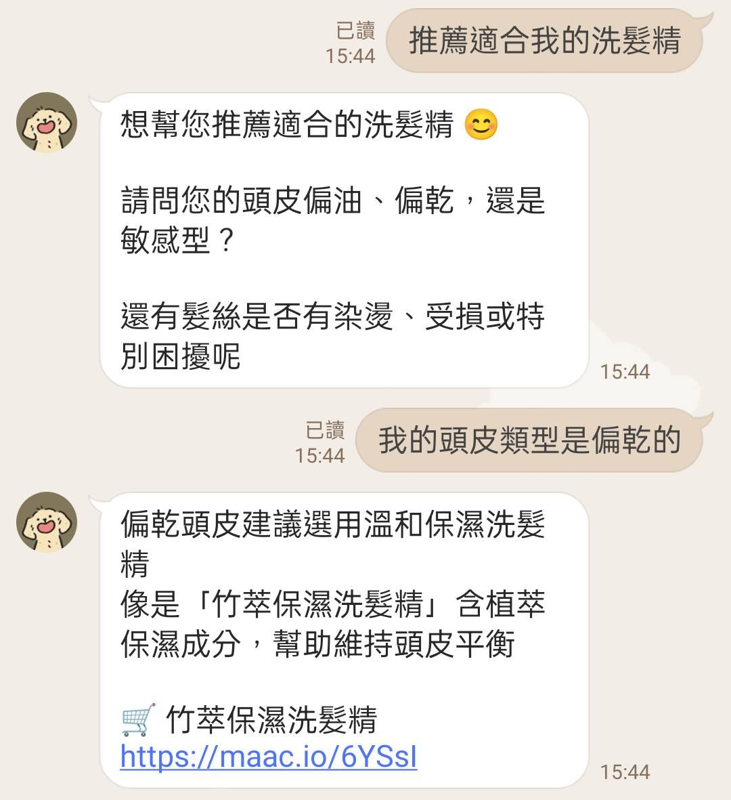
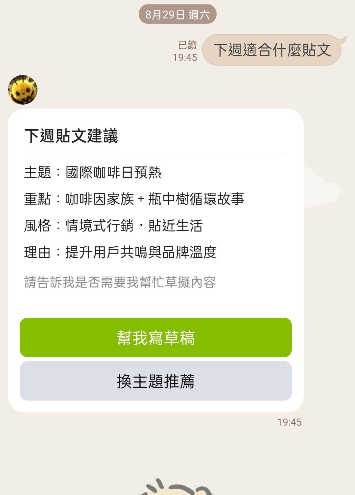
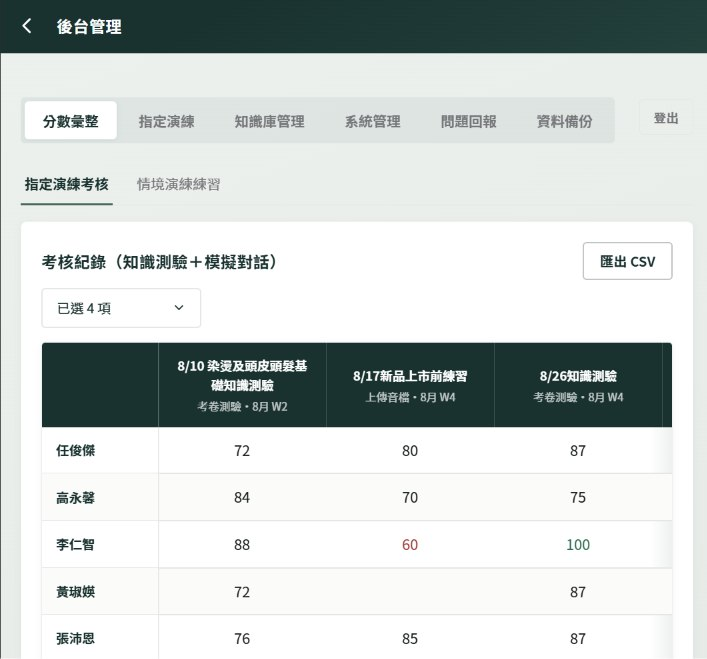
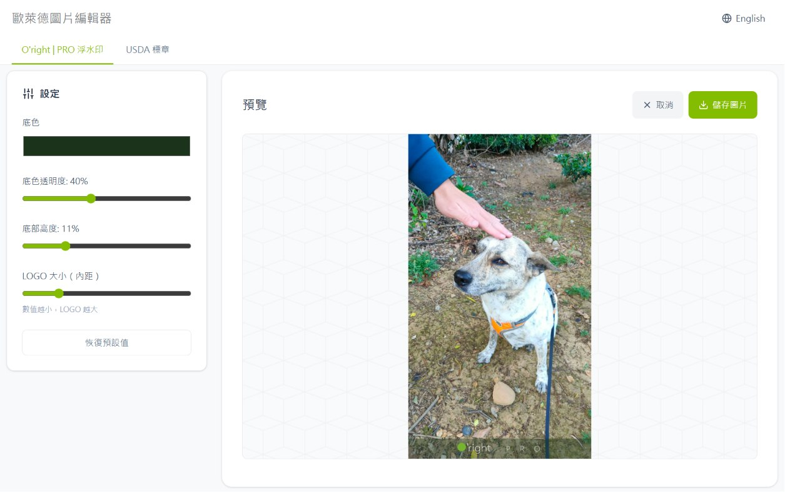
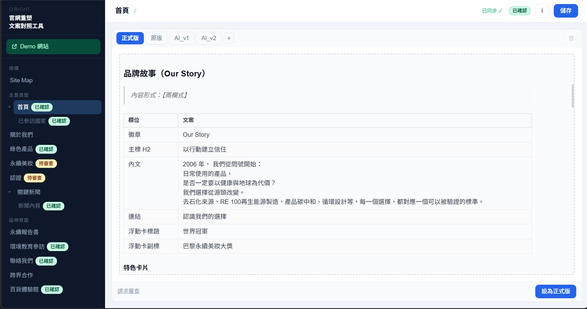
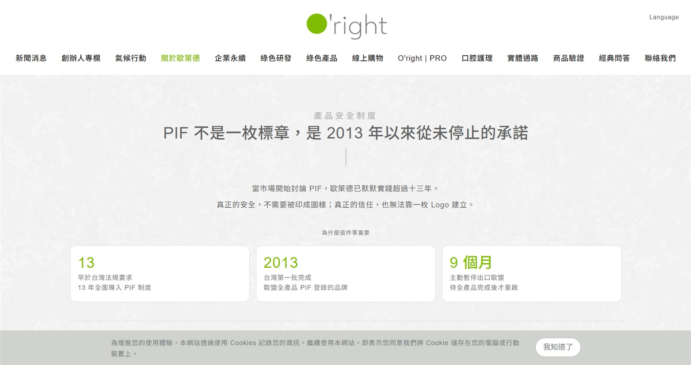
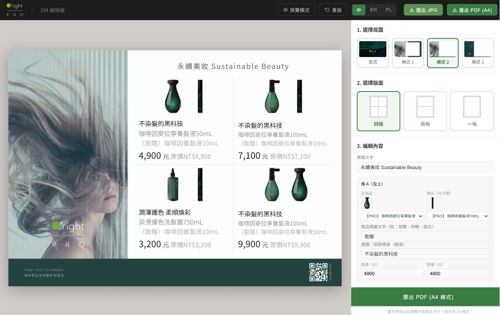
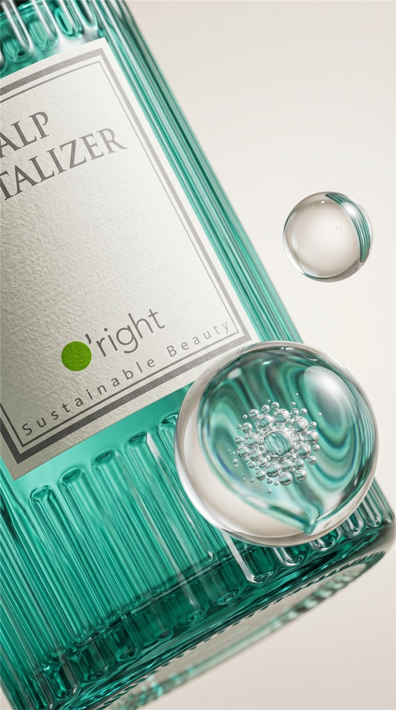
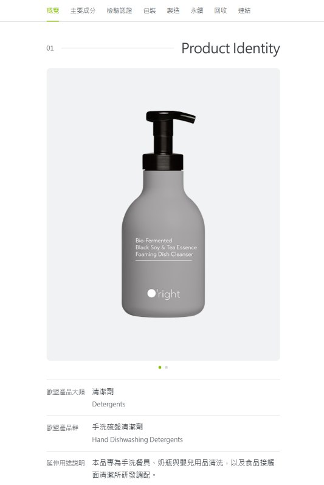

INFORMATION WORKS
資訊作品
以 AI 應用開發、網站建置與系統規劃為主。重點不只是做得出來，而是做出能被長期使用與維護的工具。以下為在歐萊德實習期間完成的十項實作，完整成果與心得見 歐萊德 AI 實習成果 →

LINE OA 客服機器人
RAG 檢索知識庫，下班時間也能由 AI 回覆客戶。

社群小編 AI Agent
串接 LINE 與 Meta 數據，自動讀成效、生成貼文。

考核 × 教育訓練機器人
考核機制、出題系統與後台管理一體的訓練平台。

新聞與競品快訊蒐集
AI 排程蒐集競品動態，一鍵複製至群組。

圖片浮水印編輯器
一鍵生成品牌浮水印照片，提升製圖效率。

官網校稿平台
文案審核流程平台化，減少 70% 來回溝通。

舊官網頁面更新
AI 複製官網風格撰寫 HTML，縮短上架時間。

文宣編輯器
業務自行生成客製化文宣，降低設計門檻。

產品短片製作
市場分析到影片生成的 AI 全流程。

DPP 產品數位護照
建立適合前端串接的產品資料庫，揭露永續資訊。